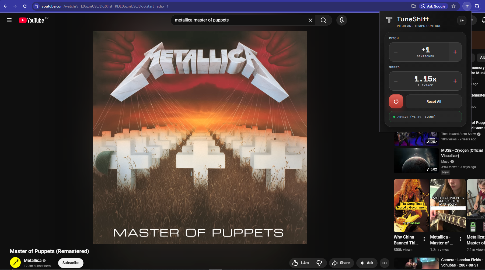
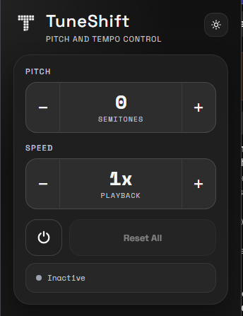
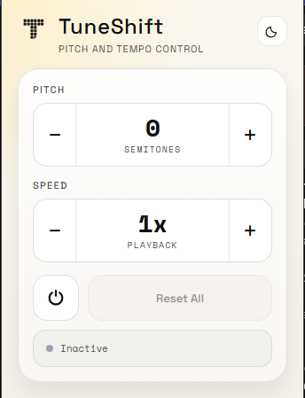

Semitone pitch control
Move songs up or down in semitone steps to match your voice, tuning, or instrument range.
Chrome extension for musicians
TuneShift gives you quick semitone pitch shifting and playback speed control from a compact popup built for practice sessions, lessons, covers, and backing tracks.

What it does
TuneShift is designed for the moments where YouTube is close, but the track is not quite in the right key or speed for practice.
Move songs up or down in semitone steps to match your voice, tuning, or instrument range.
Practice hard passages slower, then bring them back up to performance speed when ready.
Open the popup on a video page and make quick adjustments without jumping to another tool.
Return to normal pitch and speed with one button when you want the original playback back.
Screenshots


Why it exists
Lessons can be too fast. Backing tracks can sit in the wrong key. Covers and live versions can be close, but still awkward for your setup.
TuneShift keeps those adjustments one click away so you can spend more time practicing and less time moving between tabs, apps, and workarounds.
Install TuneShift
TuneShift is currently an early Chrome extension MVP. Until the Chrome Web Store listing is published, the GitHub route is the practical way to try it locally.